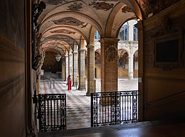

Universities
A university is an institution of higher
education


The University of Oxford is a collegiate research university in Oxford,
England. There is evidence of teaching as early as 1096, making it the oldest university in
the English-speaking world and the world's second-oldest university in continuous operation

The University of Bologna is a public research university in Bologna, Italy.
Founded in 1088 by an organised guild of students, it is the oldest university in continuous operation in the world,
and the first degree-awarding institution of higher learning. At its foundation, the word universitas was
first coined. With over 90,000 students, it is the second largest university in Italy after La Sapienza in Rome.
The University of Basel is a university in Basel, Switzerland. Founded on 4 April 1460, it is Switzerland's oldest university
and among the world's oldest surviving universities.
The university is traditionally counted among the leading institutions of higher learning in the country.